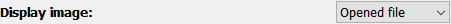
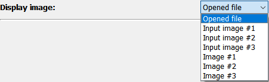
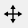
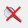
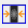
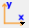

Image math frame#
The Image math frame allows to perform mathmatical operations on input images. The frame offers three buffers for input images and three buffers for result images.

The left side holds the configurations while the image is displayed on the right side.
The configuration on the left holds the following functions which will be described in more detail below:
Image import
Image selection (for display)
mathmatical operations
Image export
Image import#
The input file can be selected in any one of four ways:

Use the “Select image file” button at the top.
Enter the full file path in the input field.
Use the small “open” button right of the input field.
Drag and drop a file from the system’s file explorer.
For hdf5 files, however, you need to select data the dataset and frame number first and confirm the selection with the “Confirm input selection” button before any frame is loaded and displayed.
If the filename is valid, the selected file will be displayed immediately. The loaded file can be stored in one of three buffer positions, labeled Input image #1 through […] #3:

Display image#
The display image drop-down box allows to select an image to be displayed in the plot:
The opened file always corresponds to the latest file (or frame within the file) which has been loaded. The Input image #i are the buffers for stored input images (if used) and processed images are stored in the the Image #i buffers.
In addition, the currently displayed image can always be accessed as the current image.
Image operations#

The Image math frame offers three groups of operations:
Elementaray arithmetic operations between an image and a number, for example addition of a number to the image values.
Applying operators on an image, for example for taking the log of the image.
Arithmetic operations of two images like subtracting one image from another.
Each of these groups has their own configuration widgets. For all image operations, the user must define the output image where there results shall be stored. By default, this is Image #1 but this can be changed with the drop-down selection.
Elementary arithmetic operations#
This section allows to perform the four basic operations (addition, subtraction, division, multiplication) between an image and a number. The operator must be selected in the drop-down menu and the value can be entered in the edit box. Clicking the button Apply arithmetic operation will execute the operation, store the result in the selected output buffer and display the resulting image.
Image operators#
The Apply operator to image option allows to perform pixel-wise operations on the image. Some operators have a numerical value as second input. The list of operators is given below:
operator |
additional inputs |
description |
|---|---|---|
absolute |
/ |
Take the absolute value of the input image. |
exp |
/ |
Calculate \(exp \left( I \right)\) |
fmax |
low \(x_0\) |
Calculate the (pixel-wise) maximum \(\max \left( I, x_0 \right)\). This is essentially a lower threshold \(x_0\). |
fmin |
high \(x_1\) |
Calculate the (pixel-wise) maximum \(\min \left( I, x_1 \right)\). This is essentially an upper threshold \(x_1\). |
log |
/ |
Calculate the natural logarithm of the image \(\ln \left( I \right)\). |
log2 |
/ |
Calculate the base-2 logarithm of the image \(\log_2 \left( I \right)\). |
log10 |
/ |
Calculate the base-10 logarithm of the image \(\log_{10} \left( I \right)\). |
power |
exponent y |
Calculate the input taken to y’s power \(x^y\). |
sqrt |
/ |
Calculate the square root of the input image. |
Arithmetic image operations#
Similar to the elementary arithmetic operations, this function also allows to perform arithmetic operations, but on two images instead of an image and a number. Select the input images and the operator to calculate and display the resulting new image.
Image export#
Clicking the export button opens a dialog to select a filename to save the current image to disk.
Data visualization#
A modified silx Plot2D widget is used for displaying the data and is described in detail below.
Pydidas 2D plot#
The PydidasPlot2d is a
subclassed silx Plot2d
with additional features useful in pydidas.

- The menu
The menu bar allows access to all generic silx and additional pydidas functionality. The detailed menu icons and actions are described below in the menu entries description.
- The image display
This widget shows the image data. Depending on the zoom level, this is either the full image or a sub-region.
- The colorbar
The colorbar shows the reference for the used colormap to map data levels to colors.
- The position information
This widget displays the coordinates and data values of the data under the mouse cursor.
Two-dimensional plots are presented in a silx Plot2D widget. The toolbar options will be explained in detail below. Moving the mouse over the canvas will update the labels for x/y position and data value at the bottom of the canvas. Note that the x and y axis positions for each pixel are defined at the pixel center and the given values must be treated carefully with respect to the pixel shape, especially for coarse pixels.
Tip
The scaling of the results can be achieved by modifying the colormap settings.
menu entries description#
menu icon |
description |
|---|---|

|
Zoom mode: clicking with the mouse and dragging spans a new selection of the data to be visualized. |
|  | Panning mode: clicking with the mouse and dragging moves the data on the canvas. |
|  | Unzoom: Reset the display region to the full data. |
|  | Match canvas: Set the aspect ratio to 1 and match the canvas size to the data to allow a tight fit. |

|
Expand canvas: Reset the canvas size to take up all available space. This option does also change the data aspect to make use of the full canvas. |

|
Open the colormap editor. This button opens a window with selections for the colormap and scaling of the displayed minimum and maximum values. |

|
Crop histogram outliers: Calculate the histogram of the image and set the colormap to ignore the low x% and the top *y% of the image histogram. The levels of x and y can be adjusted in the pydidas user settings. |

|
Autoscale the colormap to the image mean value +/- 3 standard deviations. |
This action allows to control the aspect of the displayed data and allows to stretch the data to fill the available canvas or keep its original aspect ratio. |
|

|
Control the position of the origin in the image: Select between the top left and bottom left corner. |

|
Display or hide the colorbar on the drawing canvas. |

|
Mask tools: This button opens an additional widget at the bottom of the canvas with tools for importing or setting a mask to mask certain data regions. |
|  | Set coordinate system: This button will open a submenu which allows to
select the coordinate system (cartesian or cylindrical). Note that the
cylindrical coordinate system use the global |

|
Get information for selected datapoint: This button will allow the user to click on a point in the image and show a window with additional information about this point (specifically: all indices / data values). |

|
Copy the currently visible figure to the clipboard. This will only copy the main figure and not the colorbar. |

|
Save the currently loaded full data to file, ignoring any zooming. This function will open a dialogue to select the file type and filename. Depending on the selected file type, the colormap and scaling will be retained (e.g. for png export) or ignored (e.g. tiff export). |

|
Print the currently visible figure. This will print only the data visible on the canvas and it will retain colormap and scaling settings. |

|
Create and delete line profiles. This function allows the selection and editing of line profiles. The line profiles are shown in the histograms plots for the vertical and horizontal, respectively. |